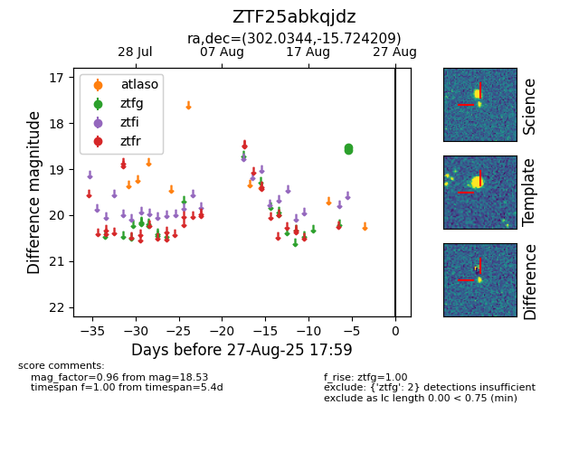

Target ZTF25abkqjdz at 2025-08-27 17:59, see:
FINK: fink-portal.org/ZTF25abkqjdz
Lasair: lasair-ztf.lsst.ac.uk/objects/ZTF25abkqjdz
ALeRCE: alerce.online/object/ZTF25abkqjdz
alt names
ZTF25abkqjdz (ztf,fink)
coordinates:
equatorial (ra, dec) = (302.0344,-15.72421)
galactic (l, b) = (26.8403,-23.88831)
photometry
last ztfg=18.53
2 ztfg detections
